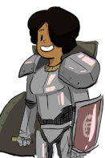

Lifetimes
Lifetimes are a way to specify additional information about borrows in order to convince the compiler that what you are attempting to do makes sense. They will only effect whether or not code can compiler and have no effect on at runtime.
Consider the following code:
fn print_str_twice(string: &str) { println!("{} {}", string, string); } fn main() { let mut greeting = "Hello".to_string(); print_str_twice(&greeting); greeting += " world"; println!("{}", greeting); }
Here the function print_str_twice borrows the argument string. Because the borrowed value cannot be held after the
function returns, and there is no return value from the function the compiler is able to work out that it's ok to modify
greeting on the next line.
But if the code looked like this:
fn get_tail_of_string(string: &str) -> &str {
&string[1..]
}
fn main() {
let mut greeting = "Hello".to_string();
let bad = get_tail_of_string(&greeting);
greeting += " world";
println!("{}", greeting);
println!("Oops {}", bad);
}
This will generate a compile error because greeting is borrowed in get_tail_of_string and part of it is returned and
assigned to bad. This is a problem because greeting is modified on the next line, but bad ends up getting used later.
So how was the compiler so smart? The answer is that it automatically generated some lifetimes and applied them to the
method signature of get_tail_of_string.
When a method borrows parameters the compiler needs to track how long those borrows live so it can determine if code should compile. This process works similar to generics. For example the method signature:
#![allow(unused_variables)] fn main() { trait Foo { fn some_function<T>(arg1: &T); } }
is actually the same as:
#![allow(unused_variables)] fn main() { trait Foo { fn some_function<'a, T>(arg1: &'a T); } }
Which means that the parameter arg1 is borrowed for however long the value passed into arg1 lasts. Of course this is
a completely unnecessary statement, and hence can be simply omitted. (The naming convention is to start with ‘a for the
first parameter and then ‘b, 'c' etc. Lowercase letters are used to distinguish lifetime from normal type parameters like T)
However in the more complex case:
#![allow(unused_variables)] fn main() { struct Foo{a:str} struct Bar {} fn some_function<'a, 'b>(arg1: &'a Foo, arg2: &'b Bar) -> &'a str {&arg1.a} }
Here the lifetime is meaningful and needs to be specified. Here the signature is providing the information that function
accepting two arguments arg1 and arg2 and these live however long the parameters passed as these values live, and the
return type lives as long as arg1. This means in this case that the return value is being derived from the first parameter
and not the second one. This will allow the compiler to check the calling code to make sure this is Ok.
(You don't need to know where the inputs came from or how long they will live. The compiler will just check everything.)
If the returned value were derived from the second parameter the function signature would look like:
#![allow(unused_variables)] fn main() { struct Foo{} struct Bar {a:str} fn some_function<'a, 'b>(arg1: &'a Foo, arg2: &'b Bar) -> &'b str {&arg2.a} }
What if the result could be derived from either parameter and which one won't be know until run-time? For example a function that returns the longer of two string slices. That would look like:
#![allow(unused_variables)] fn main() { fn get_longer<'a>(arg1: &'a str, arg2: &'a str) -> &'a str {arg1} }
In this case the compiler will infer a lifetime for 'a that must work for both parameters, and use this lifetime when reasoning about the returned value.
In general the compiler is able to automatically figure out the lifetimes, and nothing needs to be specified. For example with methods that are being invoked on an object such as:
#![allow(unused_variables)] fn main() { trait CharTrimmer { fn trim_chars(&self, chars_to_remove: &str) -> &str; } }
It is by default assumed that the source of any returned parameter is from the self argument. So the lifetimes would
be automatically inferred as:
#![allow(unused_variables)] fn main() { trait CharTrimmer { fn trim_chars<'a>(&'a self, chars_to_remove: &str) -> &'a str; } }
However if this is not the case, it can be clarified by specifying a different lifetime.
Lifetimes, only really come up when dealing with items that are being borrowed and parts are being passed out of the original called either by a return value or embedding them in a struct, and never with owned items. So they tend to be a nitch feature.
For a much more complete exploration of the exotic cases of lifetimes see the post "Too many lists".
|
 |
|
'static
There is one special lifetime: 'static. This is used to indicate the reference can live for as long as the program is
running. For example when a constant string is defined:
fn main() { let greeting = "Hello world!"; //... }
the type of greeting is actually: &'static str. Meaning that it is valid to hold onto greeting forever because the
string constant "Hello world!" will always be available. (Because string constants are part of the program itself
and hence by definition exist for the lifetime of the program. You can of course borrow them, and when you do they
have a static lifetime.) This is also be used as the lifetime for for statics and constants.
So if a function takes a 'static string such as:
#![allow(unused_variables)] fn main() { fn only_const_strings(arg: &'static str) {} }
This would restrict the values that can be passed into the method to only be string constants, or their derivatives.